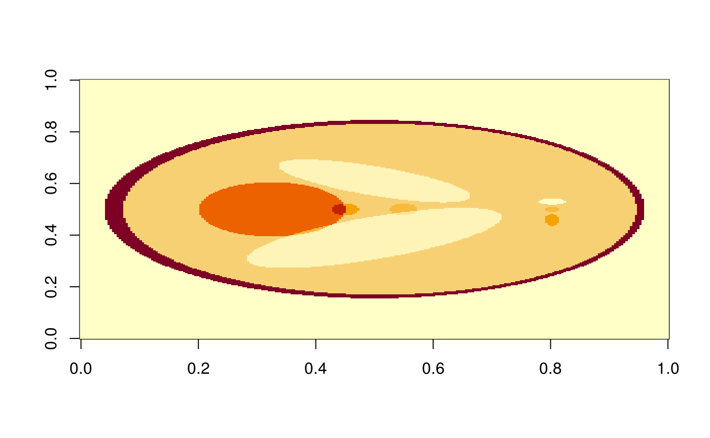
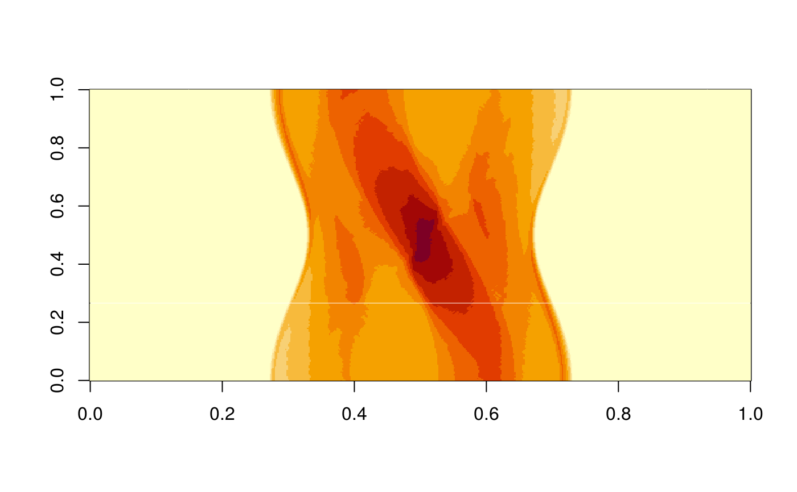
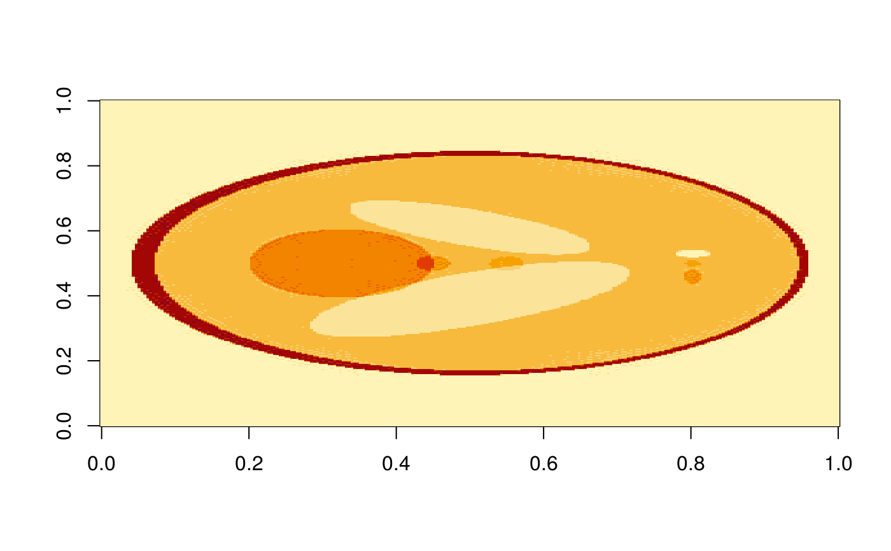

A radon transformation using the non-equispaced fast Fourier transform (NFFT). Requires a square image.
nfft_radon( image, theta = 181, rho = 2 * round(sqrt(sum((dim(image))^2))/2) + 1, fn = "polar" ) nfft_inv_radon(image, n, iter = 10, fn = "polar")
| image | square image |
|---|---|
| theta | Number of theta slices |
| rho | Number of rho slices |
| fn | Whether to use polar or linotype (polar by default) |
| n | size of image |
| iter | number of iterations for inverse |
nfft_inv_radon: Inverse Radon Transform using NFFT
